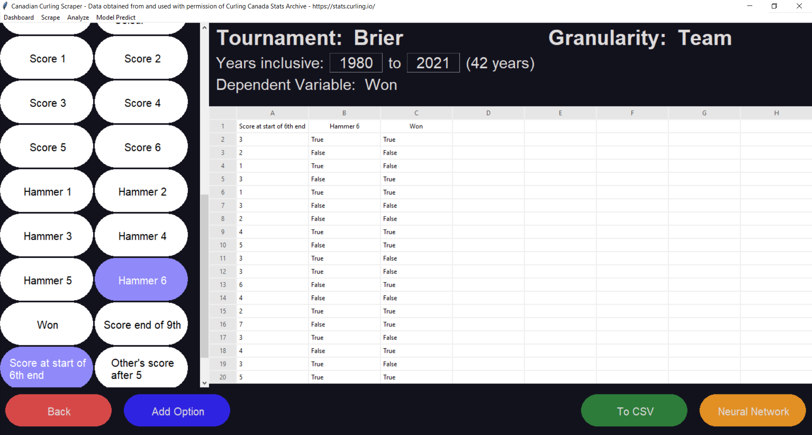

This program allows for scrapping data from Canadian National curling championships
dating back to the 1928 MacDonald Brier. Additionally, users can customize their data
sets and preview them before exporting to a csv file format.
Version 00.01.20: Various bug fixes for retrieving csv data
Version 00.01.10: Hotfix for function adding in analysis section
Version 00.01.00: Initial Beta Release
By clicking “Scrape” in the top left toolbar users can choose to scrape only years
of data that are not on file, or scrape all new data in case of database changes or
updates. Users can choose one of 5 professional curling tournaments:
After choosing the tournament and years, users can see progress updated from
the scrape while they wait for it to complete. After the data is on file locally,
summary statistics can be viewed for each tournament and year on the main screen
dashboard.


By clicking “Analyze” in the top Left toolbar users are able to choose a tournament
and year range of data that they would like to analyze.


If the independent variable to you need is not present, “Add Option” can
be clicked on to add new variables. A new window will pop up presenting you with options to add your own
custom data variables. Dropdown menus are available showing available functions, special states
(winner, loser, red, yellow, etc.), and data elements to be used. Any previously created data variable can
be used as an input for the data selection.

Additionally, if line scores are selected as a data element the ends necessary will need to be specified.
To export your data to a CSV, click the green “To CSV” button in the bottom right. The data set will be
cleaned by removing any records that do not match the expected values for each data field, and a file dialog
window will be launched to permit you to save the file in your desired location.